Kathryn — New Arrivals
June 19, 2026 · Anthropologie (petite)
Dresses (1)
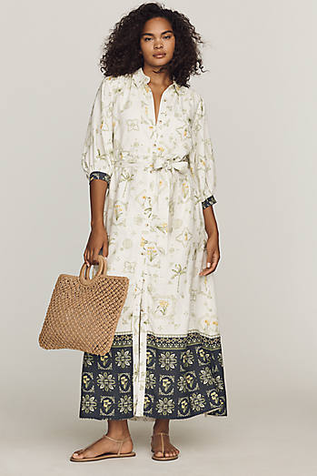
Button-through linen shirtdress — vertical placket draws the eye down; belt the natural waist to define it. Breathable for heat, sleeves for evening.
🧥 Layers well with: woven belt, straw sun hat, tan leather tote.
View item →Tops (3)
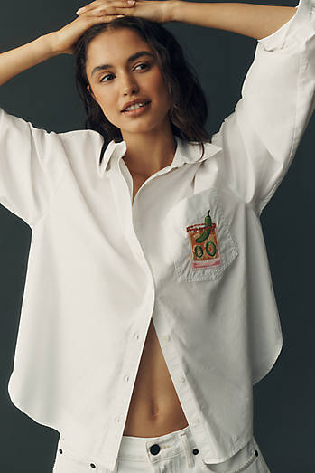
Button-down with a vertical placket — semi-tuck to define the waist.
🧥 Layers well with: high-rise wide-leg jeans (semi-tucked).
View item →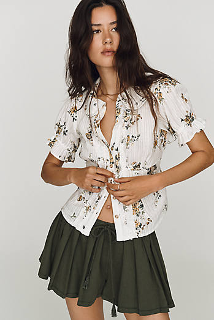
Waisted blouse is the right idea, but the Victorian Peter Pan collar + ruffled puff sleeves read a touch matronly — verify in person.
View item →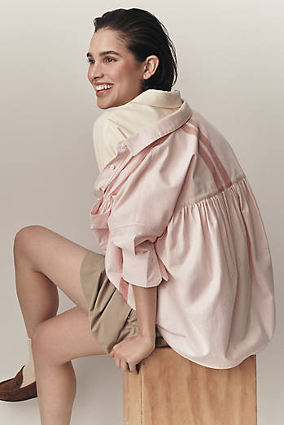
Boxy oxford — tuck or knot to keep volume off the midsection; vertical placket helps.
View item →Pants (10)
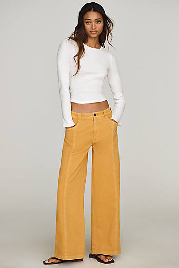
High-rise wide-leg trouser — clean flat-front lines that elongate; pair with a semi-tucked top.
View item →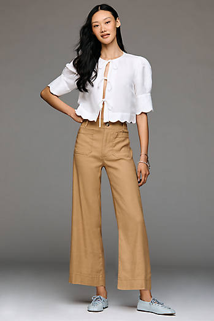
High-rise wide-leg linen — breathable for heat, with a defined waist and a long vertical line.
View item →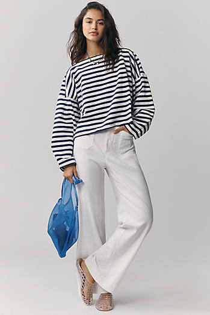
Full-length high-rise wide-leg linen — defines the waist and lengthens; great for SoCal heat.
View item →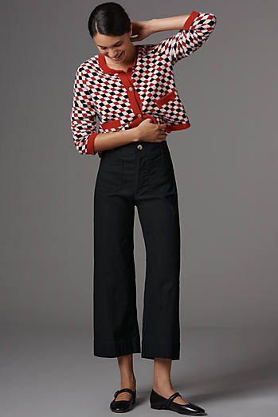
High-rise wide-leg in a structured ponte-like 'magic' fabric — holds shape and defines the waist.
View item →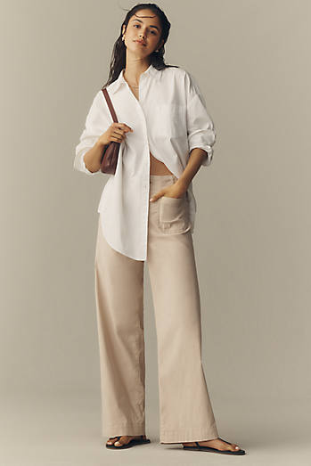
Full-length high-rise wide-leg in structured 'magic' fabric — defined waist, long clean line.
View item →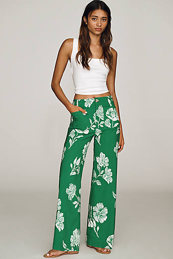
High-rise wide-leg trouser — flat-front, defined waist, long vertical line.
View item →
High-rise wide-leg in a vertical-friendly stripe — defines the waist; keep stripes vertical, not banded.
View item →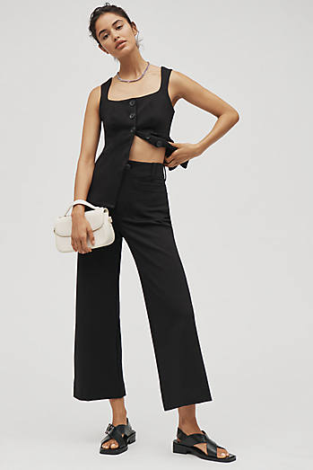
High-rise wide-leg, but the knit can cling — confirm it skims rather than hugs the midsection.
View item →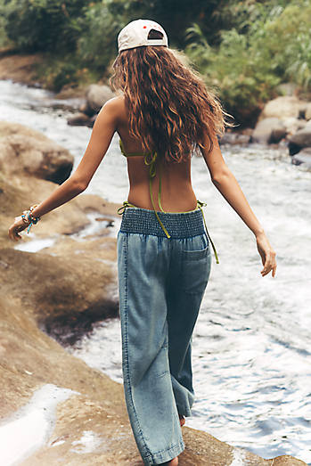
Barrel leg adds curve/volume; the structured cotton and high rise keep it from reading wide — semi-tuck a fitted top.
View item →
High-rise linen shorts — breathable; the rise defines the waist for a casual summer look.
View item →Jeans & Denim (4)

High-rise wide-leg cropped denim — defines the waist; cropped leg suits a petite frame with a heel.
View item →
Full-length high-rise wide-leg denim — waist-defining, leg-lengthening everyday template.
View item →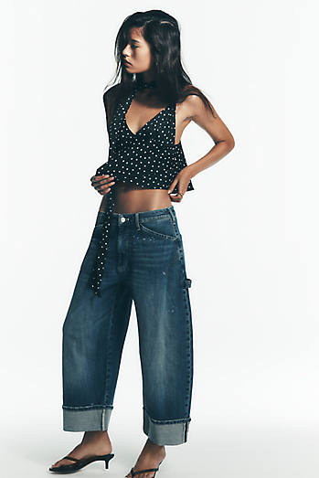
High-rise helps, but a barrel/carpenter leg adds volume — works only if the waist stays clearly defined.
View item →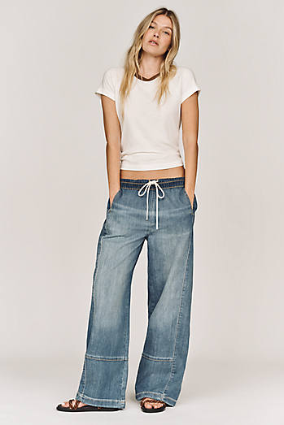
Relaxed barrel pull-on — volume in the leg plus a soft waistband; needs a tucked, fitted top to define the waist.
View item →